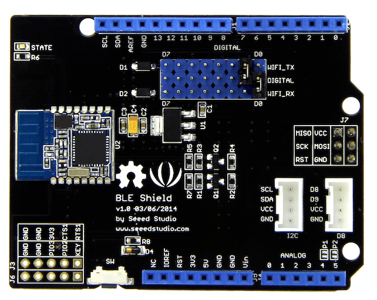
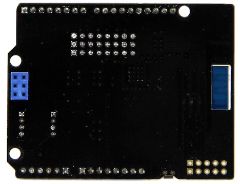
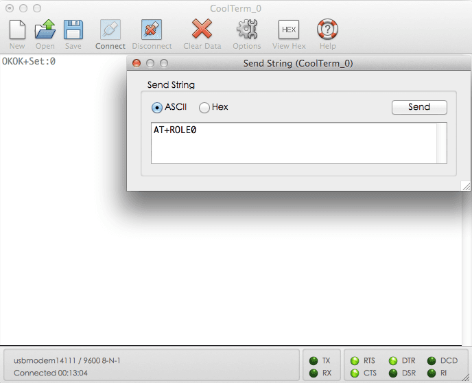

Seeed BLE v1 FrontSeeed BLE v1 Back
This Seeed BLE Shield utilizes an HM-11 module to provide your Arduino/Seeeduino with serial BLE function. It only takes two pins of the micro controller to communicate your device with this shield. With support for a BLE ComAssistant APK, this BLE Shield can talk to your mobile phone more easily without pairing. You can use it in many conditions, like robot controls or remote control equipment ,etc. We prepared an easy and convenient command set for this shield so that you can use neat and concise code to run the function.
| Specifications | Value |
|---|---|
| BT Version | Bluetooth Specification V4.0 BLE |
| Working Frequency | 2.4GHz ISM band |
| Working Current | < 15 mA |
| Sourcing Current | < 30 mA |
| Sleeping Current | < 3 mA |
| Modulation Method | GFSK(Gaussian Frequency Shift Keying) |
| RF Power | -23dbm, -6dbm, 0dbm, 6dbm, can modify through AT Command AT+POWE |
| Speed | Asynchronous: 6K Bytes, Synchronous: 6K Bytes |
| Sensibility | ≤-84dBm at 0.1% BER |
| Security | Authentication and encryption |
| Service | Central & Peripheral UUID FFE0,FFE1 |
| Supply Power | 5v |
| Working Temperature | –5 ~ +65 Centigrade |
| Size | 68mm x 43mm |
| PIN Code | 000000(by default) |
Plug Seeed BLE Shield onto the Arduino/Seeeduino directly. Please pay attention to the position of jumpers on the BLE Shield.
Seeed BLE Shield can be acted as a master or slave, you can use the one via different demos.If you are going to use the following SoftwareSerial program, please refer to the way of connection in the previous pic. BLE_TX-->D2, BLE_RX-->D3.
Open Arduino IDE, copy the following program and upload it onto the Arduino/Seeeduino board. And then two BLE Shields can communicate with each other.
Demo : BLE Slave
#include <SoftwareSerial.h> //Software Serial Port
#define RxD 2
#define TxD 3
#define DEBUG_ENABLED 1
SoftwareSerial BLE(RxD,TxD);
void setup()
{
Serial.begin(9600);
pinMode(RxD, INPUT);
pinMode(TxD, OUTPUT);
setupBleConnection();
}
void loop()
{
char recvChar;
while(1){
if(BLE.available()){//check if there's any data sent from the remote BLE shield
recvChar = BLE.read();
Serial.print(recvChar);
}
if(Serial.available()){//check if there's any data sent from the local serial terminal, you can add the other applications here
recvChar = Serial.read();
BLE.print(recvChar);
}
}
}
void setupBleConnection()
{
BLE.begin(9600); //Set BLE BaudRate to default baud rate 9600
BLE.print("AT+CLEAR"); //clear all previous setting
BLE.print("AT+ROLE0"); //set the bluetooth name as a slaver
BLE.print("AT+SAVE1"); //don't save the connect information
}
Demo : BLE Master
#include <SoftwareSerial.h> //Software Serial Port
#define RxD 2
#define TxD 3
#define DEBUG_ENABLED 1
SoftwareSerial BLE(RxD,TxD);
void setup()
{
Serial.begin(9600);
pinMode(RxD, INPUT);
pinMode(TxD, OUTPUT);
setupBleConnection();
}
void loop()
{
char recvChar;
while(1){
if(BLE.available()){//check if there's any data sent from the remote BLE shield
recvChar = BLE.read();
Serial.print(recvChar);
}
if(Serial.available()){//check if there's any data sent from the local serial terminal, you can add the other applications here
recvChar = Serial.read();
BLE.print(recvChar);
}
}
}
void setupBleConnection()
{
BLE.begin(9600); //Set BLE BaudRate to default baud rate 9600
BLE.print("AT+CLEAR"); //clear all previous setting
BLE.print("AT+ROLE1"); //set the bluetooth name as a master
BLE.print("AT+SAVE1"); //don't save the connect information
}
Besides, you can use BLE Shield via AT commands without any program, but you need to change the positions of two jumpers. BLE_TX-->D1, BLE_RX-->D0.
Then open a Serial Port Tool, like CoolTerm or others.The following are some settings : Baudrate: 9600(default) , Data Bits: 8, Parity: none, Stop Bits: 1.
First, you can send a(some) "AT" command(s) to BLE Shield to have a test. If it returns an "OK", then you can do the following steps. If not, you can upload a blank program to Arduino/Seeeduino, and see whether you can get response from Serial Port Tool via the previous operation.
void setup()
{
}
void loop()
{
}
Then, send an "AT+ROLE0" command to BLE Shield; it will return an "OK+Set:0", which means now the BLE Shield is ready to act as a slave.

More information about the AT Commands please refer to the data sheet of BLE module. You can download it from the Resource space.
Schematic of Seeed BLE Shield
BLE_apk_for_Android
DataSheet of BLE module